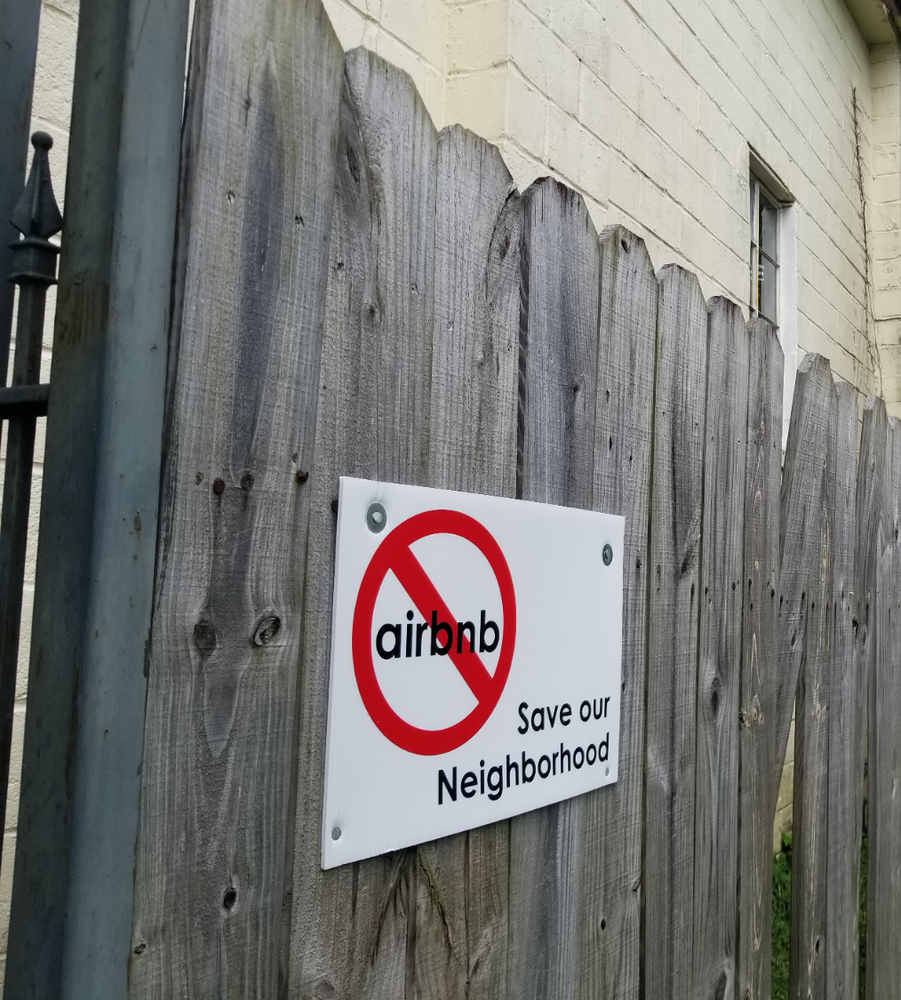
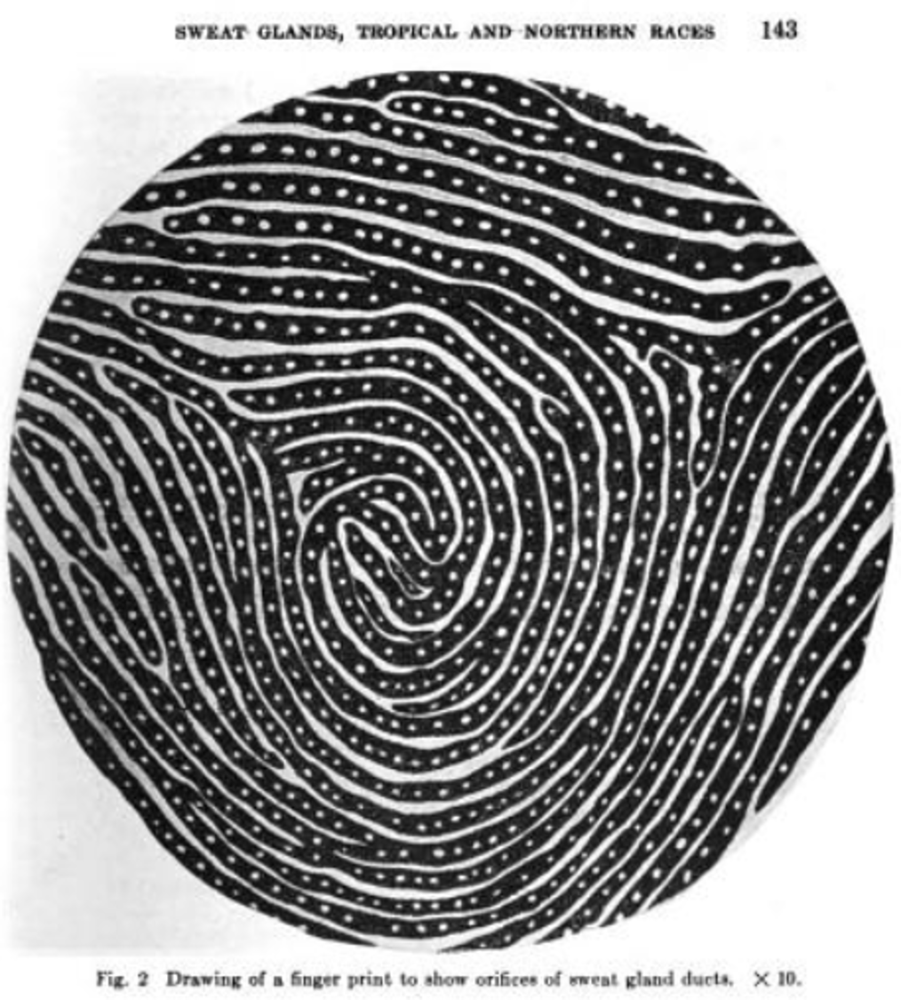

My dissertation explores the
spatialization of tax management software via its application in the single-family rental (SFR) sector. That is, how do digital technologies for the transaction and management of property impact cities tax bases in places with large or growing SFR markets?
Learn more here.
II. ai in banking.
I have longstanding interests in the application of new technology in the financial sector. Drawing on contemporary writing about platform urbanism, my research into
short-term rentals shows how they facilitate feelings of "displacement in place"—and why that can actually be good for platforms like Airbnb.

III. blockchain.
Drawn from work with Dr. Matthew Zook on his NSF grant "Blockchain and the New Spaces of Finance", I have written about the global distribution of the blockchain industry,
and am currently working on a paper about blockchain applications to landed property.
